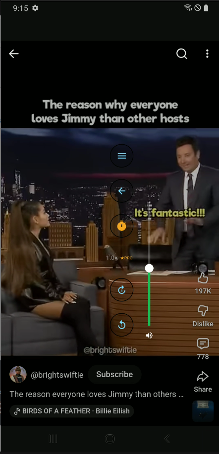
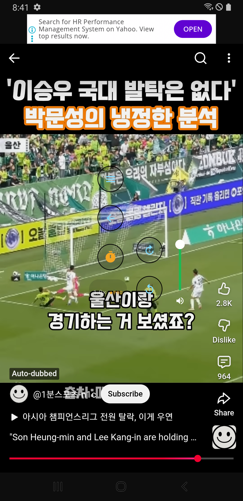
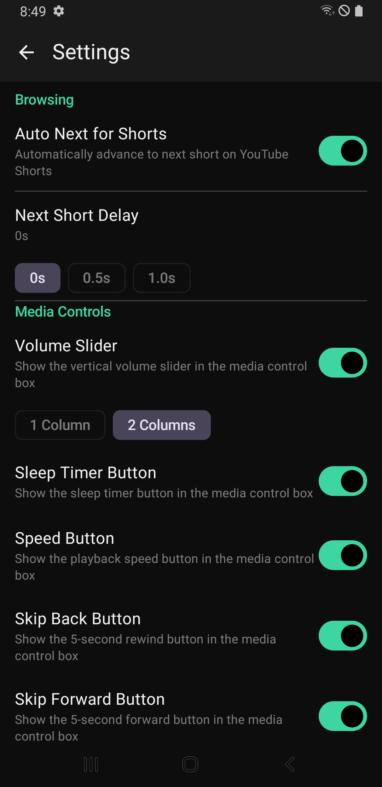
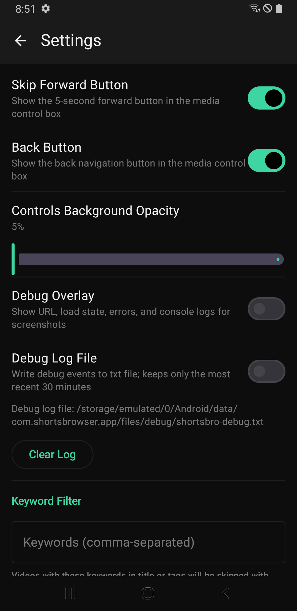

일반 버전 기준. YouTube 재생 제어(사운드/시크/속도/화질/전체화면)와 Shorts 자동 다음 재생을 중심으로 설명합니다.
아이콘 표시는 앱 UI의 Compose Material 아이콘(Icons.*)과 동일한 이름의 Material Symbols로 렌더링합니다. (예: 앱의 home 홈 버튼 = 문서의 home)
앱을 실행하면 기본 시작 페이지는 m.youtube.com 입니다.

주소창에 URL을 입력하면 해당 페이지로 이동합니다.
현재 버전에서는 주소창 메뉴(⋮)가 제거되었습니다. 설정은 아래의 “플로팅 컨트롤 박스”에서 들어갑니다.
YouTube의 Watch 또는 Shorts 페이지에서만 플로팅 컨트롤이 표시됩니다.
현재 버전의 미디어 컨트롤은 화면 하단에 “떠 있는 버튼 묶음(플로팅 컨트롤 박스)” 형태로 표시됩니다. 컨트롤 박스를 길게 누른 뒤 드래그하면 위치를 옮길 수 있습니다.
플로팅 컨트롤 박스의 햄버거 버튼(menu)을 누르면 설정 화면으로 이동합니다. 버튼 배치(1열/2열)와 볼륨 슬라이더 표시 여부는 설정 화면의 Media Controls에서 조절합니다.

실제 버튼 라벨/배치는 버전에 따라 조금 달라질 수 있으나, 기능은 동일합니다.
replay_5/forward_5를 짧게 누르면 5초 이동, 길게 누르면 10초 이동 옵션을 선택할 수 있습니다.
프로 버전에서는 배속(재생 속도) 버튼을 누르면 배속과 화질을 한 화면에서 함께 선택할 수 있습니다. 표시되는 화질 항목은 YouTube 플레이어가 제공하는 값(예: Auto, 720p, 1080p 등)에 따라 달라집니다. 일반 버전에서는 배속/화질 선택 UI가 제한될 수 있습니다.
Auto Next for Shorts를 켜두면, 같은 Shorts가 끝났을 때 다음 Shorts로 자동 이동합니다.
1) Shorts 종료 감지
2) 다음 Shorts로 이동 시도
3) 반복 재생 등 예외가 감지되면 fallback 로직으로 다음 Shorts를 다시 시도합니다.
자동 이동의 지연 시간은 0s, 0.5s, 1.0s 중에서 선택할 수 있습니다. (설정에서 조정)
YouTube의 DOM/플레이어 구조가 변경되면 Auto Next 동작이 깨질 수 있습니다. 이 경우 업데이트가 필요할 수 있습니다.
YouTube 재생 화면에서 플로팅 컨트롤 박스의 햄버거 버튼(menu)을 누르면 설정 화면으로 이동합니다.

Auto Next for Shorts
Next Short Delay
Background Playback은 일반 버전에서 비활성입니다.
Volume Slider: 플로팅 컨트롤 박스 옆에 세로 볼륨 슬라이더를 표시합니다.
1 Column / 2 Columns: 플로팅 버튼의 배치를 1열 또는 2열로 바꿉니다.
Sleep Timer Button, Speed Button,
Skip Back Button, Skip Forward Button, Back Button:
각 버튼의 표시 여부를 개별로 켜고 끌 수 있습니다.
참고: timer 아이콘은 “재생 속도”가 아니라 수면 타이머(Sleep Timer)를 의미합니다(프로 기능).
플로팅 컨트롤 박스 뒤쪽의 반투명 배경(스크림) 진하기를 슬라이더로 조절합니다. 값이 높을수록 버튼이 잘 보이고, 낮을수록 화면 가림이 줄어듭니다.

Pro에서는 앱 이름이 ShortsBro Pro로 표시되고, Background Playback 및 Native Playback Bridge (Experimental) 토글이 노출됩니다. 또한 광고 차단 항목이 Ad Removal로 표기됩니다.
문제 재현/로그 공유가 필요할 때 유용합니다.
토글을 켜면 화면 상단에 디버그 정보가 표시됩니다(현재 URL, 제목, 로딩 상태, 팝업 상태, progress, console/error 로그, Shorts auto-next 로그 등).
토글을 켜면 로그가 텍스트 파일로 저장됩니다(페이지 이동, Shorts attach/advance/wrap, speed/quality/mute/seek 등). 설정 화면에서 로그 경로 확인 및 Clear Log를 사용할 수 있습니다.